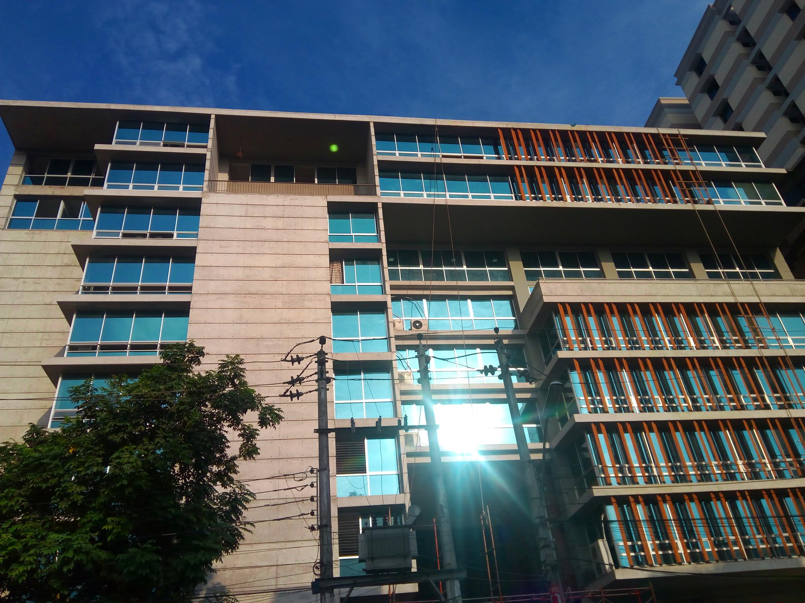

University of Asia Pacific (UAP) was established in 1996 as a private university under the Private University Act 1992. Its curriculum has been approved by The University Grants Commission of the Government of the People's Republic of Bangladesh. The university started its operation in the first semester of classes in 1996, and offered four-year bachelor's degree programs in Computer Science and Technology and Business Administration only. Now UAP offers undergraduate programs in English, Law, Architecture, Business Administration, Civil Engineering, Computer Science and Engineering, Electrical and Electronic Engineering and Pharmacy.
UAP has been sponsored by University of Asia Pacific Foundation, a non-profit, non-commercial organisation based in Dhaka, Bangladesh.
The ever increasing needs and application of computers in almost every walk of life need not be overemphasized.
The situation in developing countries as compared to the developed ones is no different.Computers now-a-days
are being widely used in all fields conceivable. To keep pace with this advancement in computer science and
engineering it is essential that efforts are made both in the public and private sectors to develop human resources
in this particular field.
| Name | Contack |
|---|---|
| UAP Administration | 74/A , Green Road, Farmgate, Dhaka - 1215, Bangladesh PABX:+8802-58157091-4, +8802-58157096 Ext: 107, 114 FAX:+8802-58157097 Email: registrar@uap-bd.edu |
| Admission Office | 74/A , Green Road , Farmgate, Dhaka - 1215, Bangladesh Telephone: +8802-9126812 PABX: +8802-58157091-4, +8802-58157096 (Ext - 0, 120) FAX:+8802-58157097 Email: admission@uap-bd.edu,, registrar@uap-bd.edu |
Username :
Password :
Role
Forgot Password?